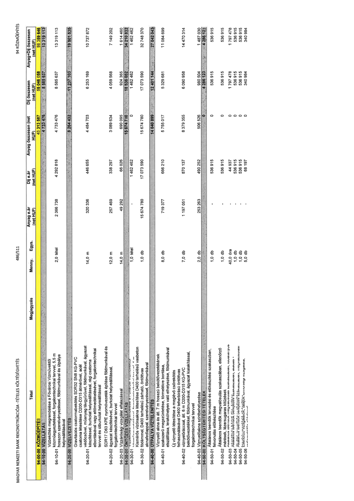

| Tétel | Menny. | Egys. | Anyag e.ár (net HUF) | Díj e.ár (net HUF) | Anyag összesen (net HUF) | Díj összesen (net HUF) | Anyag+Díj összesen (net HUF) |
|---|---|---|---|---|---|---|---|
| 94-10-01 Vízbekötés megrendelése a Fővárosi Vízművektől közműegyeztetéssel, forgalomtechnikai tervvel, 5,5 m hosszon szerelvényezéssel, földmunkával és útpálya helyreállításával | 2,0 | tétel | 2 366 738 | 4 292 818 | 4 733 476 | 8 585 637 | 13 319 113 |
| 94-20-01 Gravitációs csatornabekötés SDR32 SN8 KG-PVC csatorna létesítése D200-D315 átmérővel, acél védőcsővel, műanyag távgyűrűvel, földmunkával, ágyazat készítéssel, burkolat helyreállítással, régi csatorna elbontásával vagy eltömedékelésével, forgalomtechnikai tervvel és útburkolat helyreállítással | 14,0 | m | 320 336 | 446 655 | 4 484 703 | 6 253 169 | 10 737 872 |
| 94-20-02 SDR17 D63 KPE nyomóvezeték építése földmunkával és ágyazat készítésével, burkolat helyreállítással, forgalomtechnikai tervvel | 12,0 | m | 257 469 | 338 297 | 3 089 634 | 4 059 568 | 7 149 202 |
| 94-20-03 Vízáróssági vizsgálat elfalazással | 14,0 | m | 49 292 | 66 026 | 690 095 | 924 365 | 1 614 460 |
| 94-30-01 Kismérős vízóraakna létesítése D400 terhelésű vasbeton födémmel, D400 terhelésű zárható, öntöttvas aknafedlappal, szerelvényezéssel, földmunkával | 1,0 | tétel | 0 | 1 462 462 | 0 | 1 462 462 | 1 462 462 |
| 94-30-02 D400 terhelésű zárható, öntöttvas aknafedlappal, szerelvényezéssel, földmunkával | 1,0 | db | 15 674 780 | 17 073 590 | 15 674 780 | 17 073 590 | 32 748 370 |
| 94-40-01 Víznyelő akna és ált. 7 m hosszú bekötővezetékének szakszerű megszüntetése, törmelékre bontása, elszállítása, lerakóhelyen való elhelyezése, földmunkával | 8,0 | db | 719 377 | 666 210 | 5 755 017 | 5 329 681 | 11 084 699 |
| 94-40-02 Új víznyelő létesítése a meglévő csőbekötés felhasználásával D400 teherbírású öntöttvas víznyelőrácccsal, átl. 6 m D200-D315 KG-PVC bekötővezetékkel, földmunkával, ágyazat kialakítással, forgalomtechnikai tervvel | 7,0 | db | 1 197 051 | 870 137 | 8 379 355 | 6 090 958 | 14 470 314 |
| 94-40-03 Víznyelőakna szintbehelyezése | 2,0 | db | 253 263 | 490 252 | 506 526 | 980 504 | 1 487 030 |
| 94-50-01 Általános teendők tervezési és előkészítési szakaszban, felvonulás előkészítése | 1,0 | db | 0 | 536 915 | 0 | 536 915 | 536 915 |
| 94-50-02 Általános teendők megvalósulás szakaszában, ellenőrző mérések, lézersugaras kitűzések | 1,0 | db | 0 | 536 915 | 0 | 536 915 | 536 915 |
| 94-50-03 Általános teendők megvalósulás szakaszában, folyamatos mérés, ellenőrző mérések, lézersugaras kitűzések | 40,0 | óra | 0 | 44 937 | 0 | 1 797 478 | 1 797 478 |
| 94-50-04 Általános teendők befejezés szakaszában, átadás - átvétel, szakhatósági nyilatkozatok beszerezése, megvalósulási dokumentáció készítése | 1,0 | db | 0 | 536 915 | 0 | 536 915 | 536 915 |
| 94-50-05 Általános teendők befejezés szakaszában, megvalósulási dokumentáció készítése | 1,0 | db | 0 | 536 915 | 0 | 536 915 | 536 915 |
| 94-50-06 Üzemeltetői kezelői jóváhagyások, tanúsítványok világítása, átadás - átvételi eljárás lefolytatása | 5,0 | db | 0 | 68 197 | 0 | 340 984 | 340 984 |
